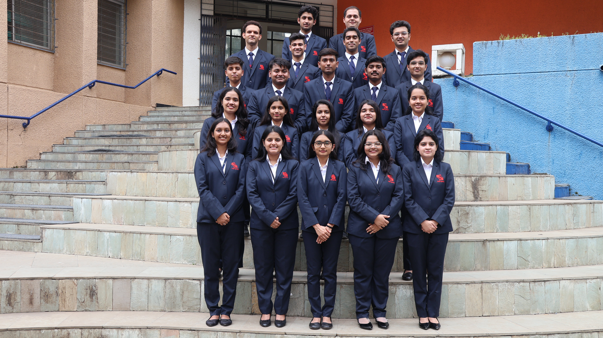
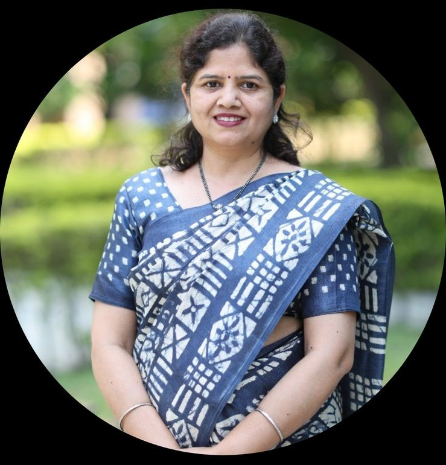
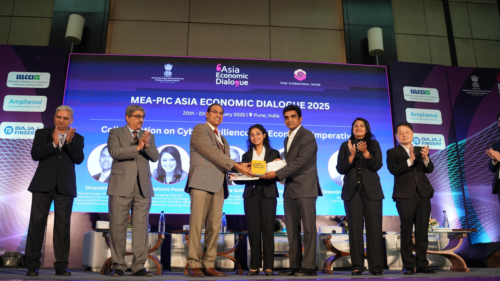
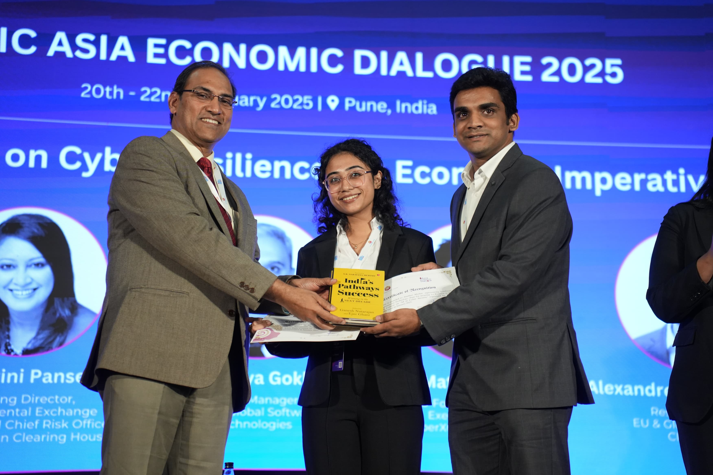
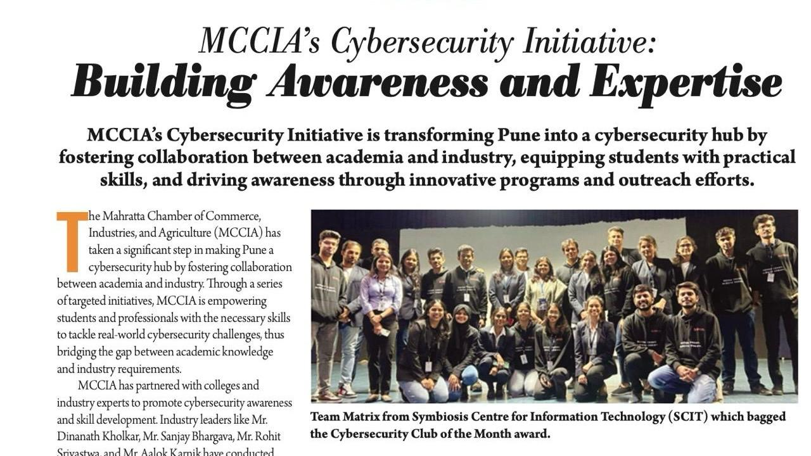

$ cat origin_story.txt
About Matrix
Team Matrix was born from late-night discussions and a shared passion for cybersecurity. Founded by a
group of security enthusiasts at SCIT, Pune, we've grown into a dynamic community committed to making
information security an integral part of everyday life.
Guided by the values and principles of esteemed communities like ISACA, we aim to inspire confidence
and enable innovation through technology. Our collaboration with Null, the Open Security Community,
reflects our commitment to raising security awareness, advancing cutting-edge research, and creating a
centralized knowledge platform for cybersecurity professionals and enthusiasts.
Team Matrix has been recognized for its dedication, with accolades like being named the Cybersecurity Club of the Month by MCCIA in January 2025. Together, we continue to
lead and inspire, working toward a secure and resilient digital future.


$ whois faculty_mentor
Our Faculty Mentor — Prof. Dr. Vidyavati Ramteke
Our esteemed Faculty Mentor plays a pivotal role in guiding and shaping our initiatives. With a
wealth of experience in academia and industry, she provides strategic direction, fosters innovation,
and ensures our team aligns with the highest standards of learning. Her mentorship goes beyond
technical knowledge — it inspires critical thinking, encourages collaboration, and nurtures
leadership. Through regular interactions, thoughtful feedback, and a deep commitment to our growth,
Vidyavati ma'am is a cornerstone of our journey and a driving force behind our vision.
$ open achievements/whitepaper_mccia.log
Team Matrix shines at MCCIA's White Paper Competition
Our students Anubhav Mathur and Isha Chavan secured 1st place in a prestigious white paper competition on "AI in Cybersecurity,"
organized by MCCIA in collaboration with the Pune International Chapter.
Under the guidance of Dr. Vidyavati Ramteke, the team explored the dual role of artificial
intelligence as both a defensive and offensive tool in the cybersecurity landscape. Their submission
stood out for in-depth research, practical insights, and forward-thinking recommendations to combat
emerging cyber threats.
The achievement was further recognized at the Asia Economic Dialogue 2025 in
Pune, where the team received an award for their outstanding contribution to AI-driven
cybersecurity.


$ open achievements/club_of_the_month.log
MCCIA honours Team Matrix — "Cybersecurity Club of the Month"

Team Matrix has been recognized as the Cybersecurity Club of the Month by the Mahratta Chamber of
Commerce, Industries and Agriculture (MCCIA) under their pioneering Cybersecurity Initiative — a program
transforming Pune into a cybersecurity hub by fostering collaboration between academia and industry.
The team stood out through impactful contributions: the Cyberon workshop on "The Human Element:
Securing the Intersection of People and Technology," technical competitions like Capture the Flag and
Hackerscape, and the Cyber Jagrukta Diwas outreach at Akashvani Pune Kendra, where staff were trained on
cybersecurity best practices.
This recognition is a testament to our dedication to cybersecurity excellence, hands-on learning, and
community outreach — and to nurturing the next generation of cybersecurity professionals.